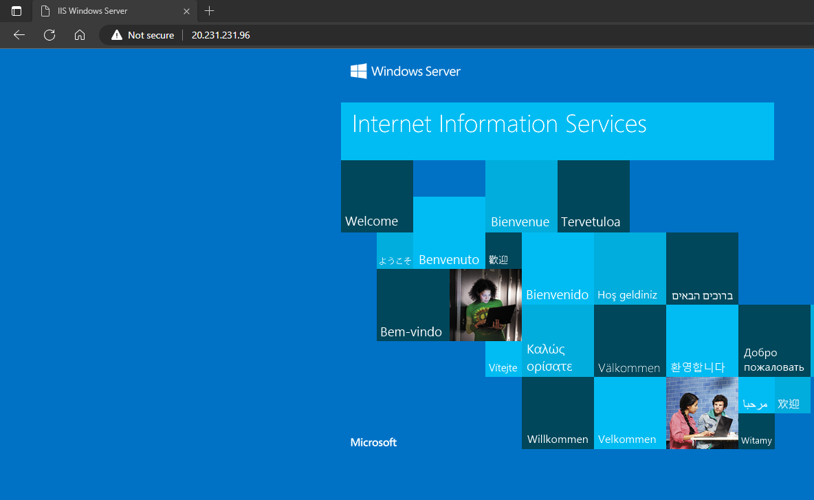

Network Security Group
What is Network Security Group
it's a firewall
it is applied in Inbound and Outbound Rules only
- Inbound port rules
- Outbound port rules

Where can NSG be attached
which can be attached to
- Subnet
- Network Interface
Where can NSG be attached
which can be attached to
- Subnet
- Network Interface

EXAMPLE
which can be attached to
- Subnet
- Network Interface

NSG Default Rules which cannot be deleted or modified
-
Inbound Rules
-
Outbound Rules
While Creating rules in NSG, you can mention Private IP Address
- Reason : under network interface the IP public and private mapping is done